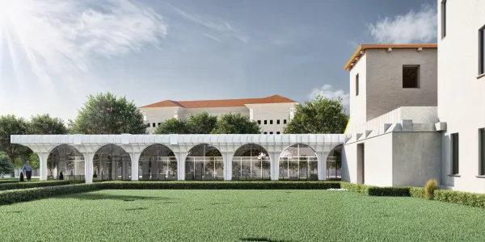
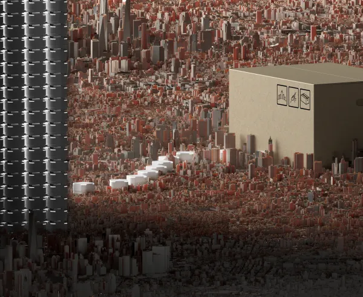

변상훈 Byun Sanghoon
Computational Design, Design Automation, Site Feasibility Study, Zoning & Building Code Analysis, Urban Design, Architecture, Massing Study, Buildable Envelope, Parcel & Block Analysis, LLM-Based Rule Extraction, Retrieval-Augmented Generation, Geospatial Analysis, Urban Data Analysis, Historical Map Digitization, Rhino · Grasshopper, Python, Plugin Development, 3D Site Modeling, Master Planning, Public Space Design, PropTech
작업


1970–2004년 7대 광역시 간선도로 시계열

보도 10점 지수와 UTCI 설계 워크플로







경력
- 2026.08–
PCP스탠다드 · 커뮤니티하우스 루프
규모검토 자동화 도구 · 부지 매입 검토 · 임대형기숙사
- 2025.05–09
건축공간연구원
유휴·저이용 교육시설 진단 · 공간 데이터 DB · GIS 분석 · AURI 일반연구보고서 2025-9
- 2025.01–02
그룬닷
Ladybug 환경 분석 · 우크라이나 재건 신도시 마스터플랜 · 규모검토
- 2020.07–2024.03
에디트콜렉티브 · 플렉시티
기획설계 자동화 · 법규 기반 지오메트리 알고리즘 · 일조 사선 · 주차 · 공개공지 · 복수동 주상복합 배치
- 2019.12–2020.06
인터페이스스튜디오
광주 대표도서관 설계공모 · 패널 도면 · 렌더 · 다이어그램 · 사옥 실시설계 도면
학력
- 2024.09–2026.08
서울대학교 협동과정 도시설계학전공 석사
LAUS 건축도시공간연구실
- 2015.03–2023.08
홍익대학교 실내건축학전공 학사
논문
- 2026.06
LLM 기반 건축가능영역 설계 자동화
「도시설계」 27(3), KCI, 제1저자
- 2026.04
PLE Index
CAADRIA 2026 Full Paper, 제1저자, 구두 발표
- 2026.04
AI-Based Temporal Reconstruction of Arterial Roads via Map Digitization
CAADRIA 2026, 제2저자
- 2025
한국도시설계학회 춘계·추계 학술대회 발표 2편
제2저자
- 2025
데이터 기반의 유휴·저이용 교육시설 진단
AURI 일반연구보고서 2025-9
수상
- 2025.11
한국도시설계학회 제2회 도시설계 작품전시회 우수상
Yongsan Riverway
- 2025.02
YAC Garden of Knowledge, Honorable Mention
팀
강의
- 2025
서울대 환경대학원 강의조교
파라메트릭 도시설계 모델링·환경설계와 디지털 미디어
- 2025.08
LAUS 자동화설계 워크숍
Rhino·GH Python 강사
- 2023
EDIT WORKSHOP
컴퓨테이션 디자인 교육